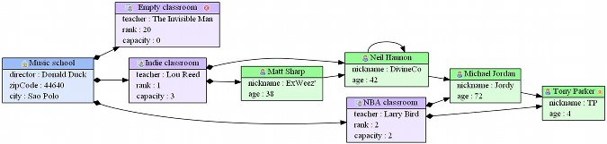
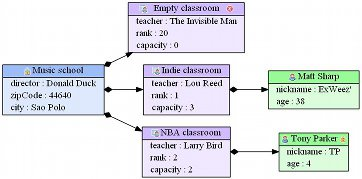

The Filter allows to filter the nodes that will be represented on the diagram. A filter is built over an OCL constraint that tells to emf2gv if an EOjbtec must be drawn or not.
The filters must meet the following rules :
By default, with the school sample, if we use the standard Graphical Description (in other words, the one that can be obtained by using the creation wizard) we get the following diagram :
Let's imagine we add a filter in the standard Graphical Description (in other words, the one that can be obtained by using the creation wizard) with the following property values :
Enabled : trueFiltered Type : StudentFilter Expression : age < 40If we run the diagram generation, we may get the following result (notice that the students whose age is >= 40 have disappeared) :
The Filter accepts the following properties :
| Category | Name | Description | Default literal |
|---|---|---|---|
| - | enabled | A boolean indicating if the filter is enabled or not | true |
| filterExpression | The OCL expression that is used to evaluate if the EObjects of the specified filter type (EClass) are to be shown in the diagram (the expression must return a boolean value) | true | |
| filteredType | The type (EClass) to which this filter will be applied |